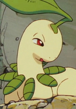

|
Frosch |
- Fairy Tail
- Fairy Tail (2014)
|
Frosch is Rogue Cheney's exceed. Frosch easily agrees with Lector's opinion. He has a happy-go-lucky personality. He is fond of Yukino, Rogue and Lector. |
 |
Mew |
- Pokemon Movie 8: Lucario and The Mystery of Mew
- Pokemon: Mewtwo Returns
- Pokemon: The Mastermind of Mirage Pokemon
|
Mew is a Mythical Pokemon from the Kanto region. Mew is incredibly adaptable, able to travel freely in the air or underwater. It is intelligence, curiosity, playfulness, and even selflessness. |
 |
Nina Tucker |
|
Nina Tucker was the daughter of Shou Trucker. She was happy, cheerful and excitable young girl. |
|  |
Bayleef |
- Pokemon
- Pokemon Chronicles
|
Bayleef is a Pokemon from the Johto region. It evolves from the grass starter, Chikorita. Bayleef's fragrance has a combination of energizing, stimulating, and healing effects. Satomi Koorogi voiced Casey's Bayleef. |
 |
Chikorita |
|
Chikorita is a Pokemon from the Johto region. Chikorita is a grass starter for Johto. Chikorita uses its leaf to determine the temperature and humidity of the surrounding air. Satomi Koorogi voiced Casey's Chikorita. |
 |
Pikachu |
- Pokemon
- Pokemon Chronicles
|
Pikachu is the main Pokemon in all of Pokemon. Pikachu is from the Kanto region and the evolved form of Pichu. Pikachu can recharge each other with their build up energy. Satomi Koorogi voiced Ritchie's Pikachu. |
 |
Piplup |
- Pokemon Diamond and Pearl
|
Piplup is one of the starters of the Sinnoh region. Piplup has a strong sense of self-pride. Piplup has weak walking ability. Satomi Koorogi voiced Tyler's Piplup. |
 |
Togepi |
- Pokemon
- Pokemon Movie 1: The First Movie
- Pokemon: Pikachu's Rescue Adventure
- Pokemon Movie 2: The Power of One
- Pokemon: Pikachu's Winter Vacation
- Pokemom Movie 3: Spell of the Unknown
- Pokemon: Pikachu's Winter Vacation
- Pokemon: Pikachu and Pichu
- Pokemon Movie 4: Pokemon 4Ever
- Pokemon: Pikachu's Winter Vacation 2000
- Pokemon: Pikachu's Pikaboo
- Pokemon: Pikachu's Winter Vacation 2001
- Pokemon Movie 5: Heroes - Latias and Latios
- Pokemon Advanced Generations
|
Togepi is a Pokemon from the Johto region. Topegi is able to release poison from the spikes on its head. Togepi is a sign of good luck. Satomi Koorogi voiced Misty's Togepi. |
| |
Togetic |
- Pokemon Advanced Generations
|
Togetic is a Pokemon from the Johto region. It evolves from Togepi. Togetic can sense the kindess in other people and Pokemon's hearts. Satomi Koorogi voiced Misty's Togetic. |
 |
Umbreon |
- Pokemon
- Pokemon Chronicles
- Pokemon Diamond and Pearl
|
Umbreon is a Pokemon from the Johto region. Umbreon is an evolved form of Eevee. When it gets agitated, it can release a poisonous sweat. Satomi Koorogi voiced Gray's and Tamao's Umbreon.
|


.jpg)